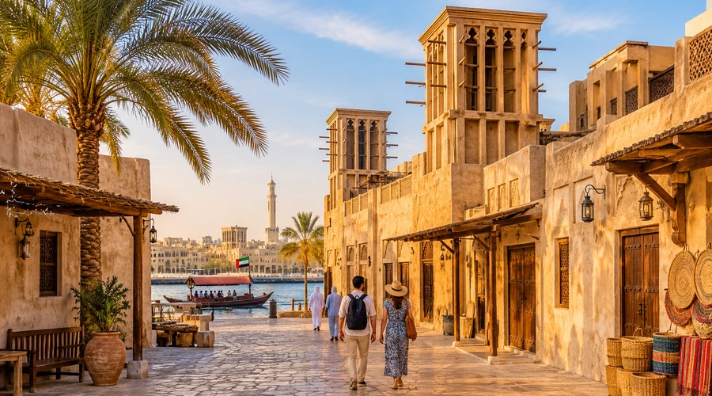

Discover the Soul of the UAE with an Unforgettable Dubai Heritage Tour

Dubai is more impressive than its skyline and luxury attractions. It is full of interesting tales of pearl divers and traders that contributed to the development of the emirate. Arooha Tours will also take travellers through a Dubai Cultural Heritage Tour that will be memorable. A Dubai Heritage Tour provides a more in depth view of the cultural heritage of the UAE.
In quiet historic streets to bustling traditional markets each destination has something to tell. Tourists are given a chance to learn and appreciate the traditions that make the Emirati culture unique and see local architecture and taste traditional food. It is a great chance to see the other face of Dubai.
Experience Authentic Emirati Traditions with a Dubai Heritage Tour
1. Walk Through the Historic Streets of Al Fahidi
Al Fahidi Historical Neighbourhood recreates the spirit of ancient Dubai. The houses and wind towers are unique and are reminiscent of earlier architecture. Tourists will be able to walk down narrow streets and find cultural galleries and museums telling fascinating facts about the history of the emirate.
2. Experience the Traditional Charm of Dubai Creek
Dubai Creek can give us an insight into the early trading history of the city. Tourists may get a classic abra ride and observe wooden boats crossing the water. Its waterfront represents the significance of fishing and maritime commerce to developing Dubai.
3. Learn About Emirati Customs and Hospitality
Knowledge of the local culture is useful in making travel worthwhile. Sheikh Mohammed bin Rashid Al Maktoum Centre of Cultural Understanding will give a visitor an introduction to Emirati practices and hospitality. Through cultural activities and traditional meals travellers can learn about local values and everyday lifestyles.
4. Discover the Stories at Al Shindagha Museum
Al Shindagha Museum gives visitors a tour of various periods in the history of Dubai. Its interactive exhibitions delve into the way in which communities grew around Dubai Creek. Another fascinating destination is The Perfume House where the visitors can learn the significance of traditional perfumes in the Emirati culture.
5. Explore the Colourful Traditional Souks
The traditional markets of Dubai are a delightful blend of shopping and culture exploration. Tourists are able to shop for jewellery in the Gold Souk and learn about the spices in the Spice Souk. The Textile Souk is also fascinating due to its colourful fabrics and the traditional shopping environment.
6. Taste the Authentic Flavours of Emirati Cuisine
Another approach to comprehending the Emirati culture is traditional food. Some of the dishes that visitors can sample include Machboos and Harees in addition to sweet Luqaimat. Arabic coffee and dates are also important parts of local hospitality. You can be included in a heritage experience by incorporating authentic dining experiences.
7. Appreciate the Beauty of Traditional Emirati Architecture
Old structures tell how the previous generations managed to adjust their houses to the climate of the desert. Natural ventilation was achieved through wind towers and shaded courtyards, which were convenient architectural designs. Touring historic heritage houses will allow tourists to recognize the effort and commitment in creating the history of the historic neighbourhoods in Dubai.
8. Explore the Maritime Traditions of Dubai
The sea has been a significant part of the history of Dubai. Local families were sustained by fishing and pearl diving and merchants were linked to trading destinations by wooden dhows. A visit to maritime exhibitions will enable visitors to learn about these old jobs and how they contributed to the development of the emirate.
9. Capture Memorable Moments Around Old Dubai
Old Dubai provides some of the best photography locations for travellers. The old doorways and the old buildings form a good background and the bustling souks make scenes come alive with their colourful appearance. Tourists will be able to take pictures that they will remember and at the same time savor the ambience and architectural features of these cultural neighbourhoods.
10. Understand Dubai's Transformation Through the Year
The transformation of Dubai as a small trading community into a global destination is amazing. Touring its historical site as well as its contemporary marvels aids tourist in learning about this change. Another thing that the experience brings to the fore is how the emirate still manages to keep its traditions but also open to new opportunities and development.
Important Tips for Planning Your Dubai Heritage Experience
With some planning your cultural vacation can be more comfortable and enjoyable. These are some of the tips that you should consider when planning your sightseeing
- Choose lightweight outfits suitable for walking and visiting cultural attractions
- Morning visits are ideal for exploring outdoor heritage locations
- Stay hydrated while walking through historic streets and markets
- Follow cultural guidelines and photography rules at different attractions
- Make time to enjoy traditional Emirati dishes and Arabic coffee
- Allow enough time to explore each destination without rushing
- A knowledgeable guide can make historical visits more informative
Conclusion
The cultural heritage of Dubai has many more than historic building and traditional markets. It helps to familiarize visitors with the tales of previous generations and traditions that still affect the life of Emiratis. Taking a tour of Al Fahidi and Dubai Creek in addition to museums and local markets makes one have a better understanding of the intriguing history of the UAE.
Explore the cultural aspect of the emirate and make your next holiday more meaningful. The traditions and hospitality that make the UAE unique make the Dubai Heritage Tour with Arooha Tours special. Venture out of the common sights and leave behind some memories worth the telling.